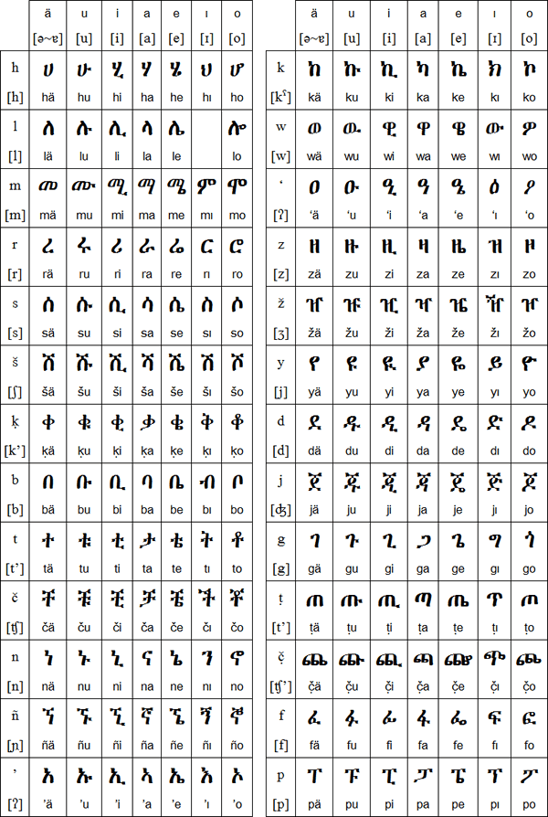

Ge’ez (ግዕዝ), which is also known as Ethiopic, is one of the oldest Semitic languages (Tareke et al.,
2002) and its alphabets is among the oldest alphabets still in use in the world of today. Furthermore, the Ge’ez language is among the four languages (Sabaean, Greek, and Arabic) that have
been and continue to be used for ancient inscriptional arts. Ge’ez is currently not an actively spoken language nor a native tongue of any people. Its use is limited to the liturgical language of
the Ethiopian Orthodox Tewahedo, Eritrean Orthodox Tewahedo, Ethiopian Catholic, and Eritrean Catholic Christians. It is also used during prayer and at regularly scheduled public religious feast celebrations. The Bible dominates the literature, and it comprises the Deuterocanonical books. According to (Molla & Tabor, 2018), this language also has many medieval and
early modern original texts. The majority of the essential works are correspondingly the literature of the Ethiopian Orthodox Tewahedo Church. These works include Christian Orthodox liturgy (service
books, prayers, hymns), hagiographies, and a range of Patristic literature. Around 200 texts were written about home-grown Ethiopian saints from the fourteenth to the nineteenth century. The religious alignment of Ge’ez literature was due to traditional education being the obligation of priests
and monks. More info about the alphabet on Ge’ez can be found in the appendix section.
